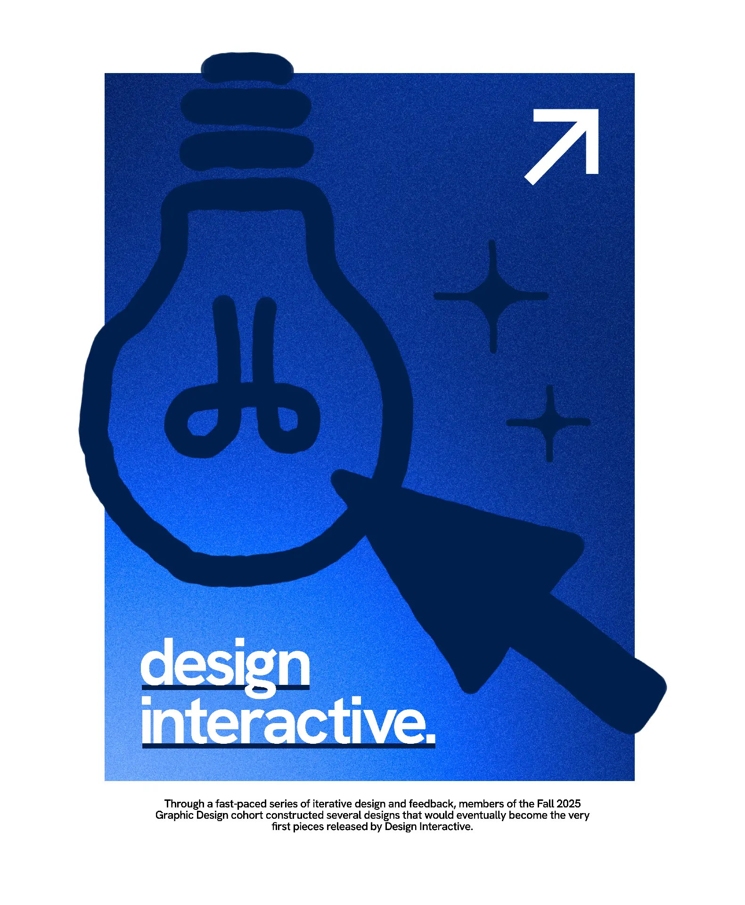

Design Interactive Merch
November 2025
A shirt design which represents Design Interactive's design and tech-based origins.
Because the brand embodied a balanced mix between minimalist and hand-drawn elements, I chose to draw a web icon and a mouse cursor, both tech-based symbols inspired by the tech-based foundations of the organization.
This entire project was a bit of a challenge because we had a strict three-color limitation due to the printing method used. After doing some research, I learned that you could use multiple shades of the same color which led to a pretty nice monochromatic gradient design.

In the end, my design was selected amongst six other designs for the organization's first merchandise release.